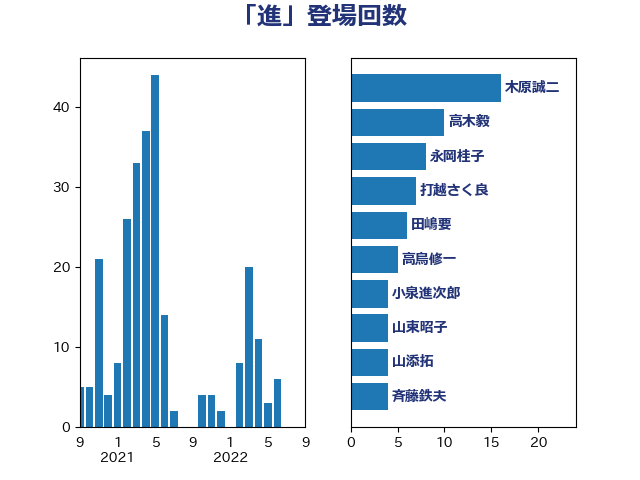

単語「進」

| 木原誠二 | 自由民主党 | 16 回 |
| 高木毅 | 自由民主党 | 10 回 |
| 永岡桂子 | 自由民主党 | 8 回 |
| 打越さく良 | 立憲民主党 | 7 回 |
| 田嶋要 | 立憲民主党 | 6 回 |
| 高鳥修一 | 自由民主党 | 5 回 |
| 小泉進次郎 | 自由民主党 | 4 回 |
| 山東昭子 | 自由民主党 | 4 回 |
| 山添拓 | 日本共産党 | 4 回 |
| 斉藤鉄夫 | 公明党 | 4 回 |
| 笠井亮 | 日本共産党 | 4 回 |
| 細田博之 | 自由民主党 | 4 回 |
| 倉林明子 | 日本共産党 | 3 回 |
| 足立康史 | 日本維新の会 | 3 回 |
| 小倉將信 | 自由民主党 | 2 回 |
| 山口壯 | 自由民主党 | 2 回 |
| 山際大志郎 | 自由民主党 | 2 回 |
| 新谷正義 | 自由民主党 | 2 回 |
| 松島みどり | 自由民主党 | 2 回 |
| 源馬謙太郎 | 立憲民主党 | 2 回 |
| 石原宏高 | 自由民主党 | 2 回 |
| 義家弘介 | 自由民主党 | 2 回 |
| 舩後靖彦 | れいわ新選組 | 2 回 |
| 藤原崇 | 自由民主党 | 2 回 |
| 近藤昭一 | 立憲民主党 | 2 回 |
| 野村哲郎 | 自由民主党 | 2 回 |
| 金田勝年 | 自由民主党 | 2 回 |
| 音喜多駿 | 日本維新の会 | 2 回 |
| 麻生太郎 | 自由民主党 | 2 回 |
| 三原じゅん子 | 自由民主党 | 1 回 |
| 城内実 | 自由民主党 | 1 回 |
| 塩村あやか | 立憲民主党 | 1 回 |
| 奥野総一郎 | 立憲民主党 | 1 回 |
| 山下芳生 | 日本共産党 | 1 回 |
| 平井卓也 | 自由民主党 | 1 回 |
| 平木大作 | 公明党 | 1 回 |
| 徳永エリ | 立憲民主党 | 1 回 |
| 有村治子 | 自由民主党 | 1 回 |
| 杉本和巳 | 日本維新の会 | 1 回 |
| 松川るい | 自由民主党 | 1 回 |
| 橋本岳 | 自由民主党 | 1 回 |
| 櫻井周 | 立憲民主党 | 1 回 |
| 武田良太 | 自由民主党 | 1 回 |
| 河野義博 | 公明党 | 1 回 |
| 泉田裕彦 | 自由民主党 | 1 回 |
| 浜口誠 | 国民民主党 | 1 回 |
| 海江田万里 | 立憲民主党 | 1 回 |
| 渡辺猛之 | 自由民主党 | 1 回 |
| 片山大介 | 日本維新の会 | 1 回 |
| 田村憲久 | 自由民主党 | 1 回 |
| 石井苗子 | 日本維新の会 | 1 回 |
| 福山哲郎 | 立憲民主党 | 1 回 |
| 美延映夫 | 日本維新の会 | 1 回 |
| 菅義偉 | 自由民主党 | 1 回 |
| 薗浦健太郎 | 自由民主党 | 1 回 |
| 赤羽一嘉 | 公明党 | 1 回 |
| 遠藤良太 | 日本維新の会 | 1 回 |
| 野上浩太郎 | 自由民主党 | 1 回 |
| 長谷川岳 | 自由民主党 | 1 回 |
| 関芳弘 | 自由民主党 | 1 回 |